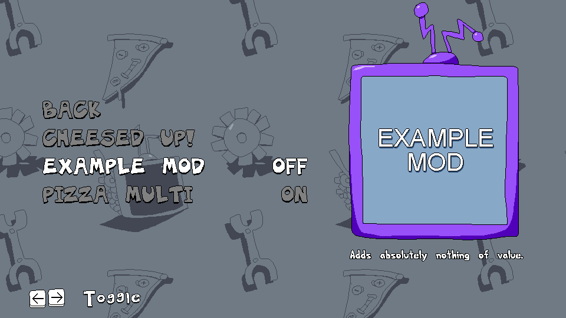

documentation
The haphazardly arranged documentation for Cheesed Up's mod loader.
Cheesed Up has a simple mod loader of its own now.
That means you can have one or more community-made mods installed.
They're toggleable in the settings:

Mods are placed in the "mods" folder next to the .exe:
CheesyPizza/mods/<mod>
If you're a little experienced with GameMaker, you can add simple stuff into the mod very easily.
The API can do basic characters without GML coding, but you'll still need some form of programming knowledge.
Prepare. You're gonna be dealing with a lot of JSON files.